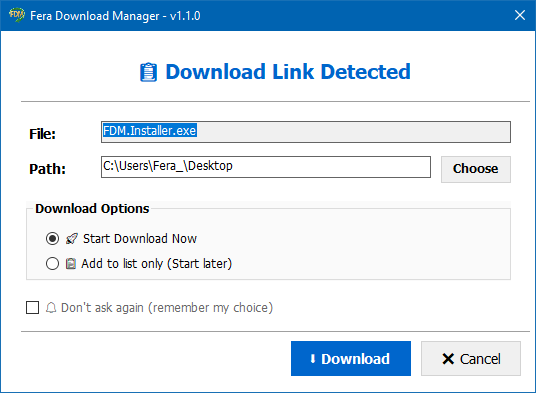

📥 Powerful Download Manager
Download files via HTTP, HTTPS, and FTP with resume support and up to 10 parallel downloads. Auto-retry on failure and smart error handling ensure your downloads complete successfully.
- Resume broken downloads
- Up to 10 simultaneous downloads
- Speed limit control
- Auto-retry on network errors
- FTP support with authentication

🌐 Built-in Web Browser
Browse the internet with multiple tabs, manage bookmarks with folders and drag-and-drop, and enjoy automatic ad blocking. Import/export your bookmarks from Chrome or Firefox.
- Multiple tabs
- Bookmark folders & drag-drop
- Ad blocker
- Import/Export bookmarks
- Dark/Light themes

🧲 Torrent Download Manager
Download torrent files and magnet links with ease. Select which files to download before starting, and monitor seeds/peers in real-time.
- .torrent & magnet links
- File selection before download
- Seed/peer monitoring
- Pause/Resume torrents
- Auto-save states

🎬 YouTube Downloader
Download videos from YouTube in various qualities (up to 1080p) or extract audio as MP3. Full playlist support and smart browser integration.
- Video download (up to 1080p)
- MP3 extraction (128k/320k)
- Playlist support
- Thumbnail preview
- Smart browser button

📅 Smart Scheduler
Schedule downloads for specific times, create recurring tasks (daily, weekly), and organize them into queues. Perfect for off-peak hours.
- One-time or recurring tasks
- Multiple queues
- Start/Stop times
- Max retries configuration
- Post-download actions

🌍 Bilingual Interface
Fully supports both Arabic (RTL) and English. Switch between languages instantly, with complete RTL layout support for Arabic users.
- Full Arabic translation
- RTL layout support
- One-click language switch
- Dark & Light themes

📋 Clipboard Monitor
Automatically detects copied URLs and shows a quick-add dialog. Choose download options, rename files, and select save path instantly.
- Auto URL detection
- Quick-add dialog
- File rename option
- Path selection
- Start now or later

🔒 Secure Licensing
Flexible licensing system with trial mode (7 days) and multiple activation options. Machine-locked licenses with RSA digital signatures.
- 7-day trial period
- Standard, Premium, Business tiers
- Machine-locked activation
- RSA signed licenses